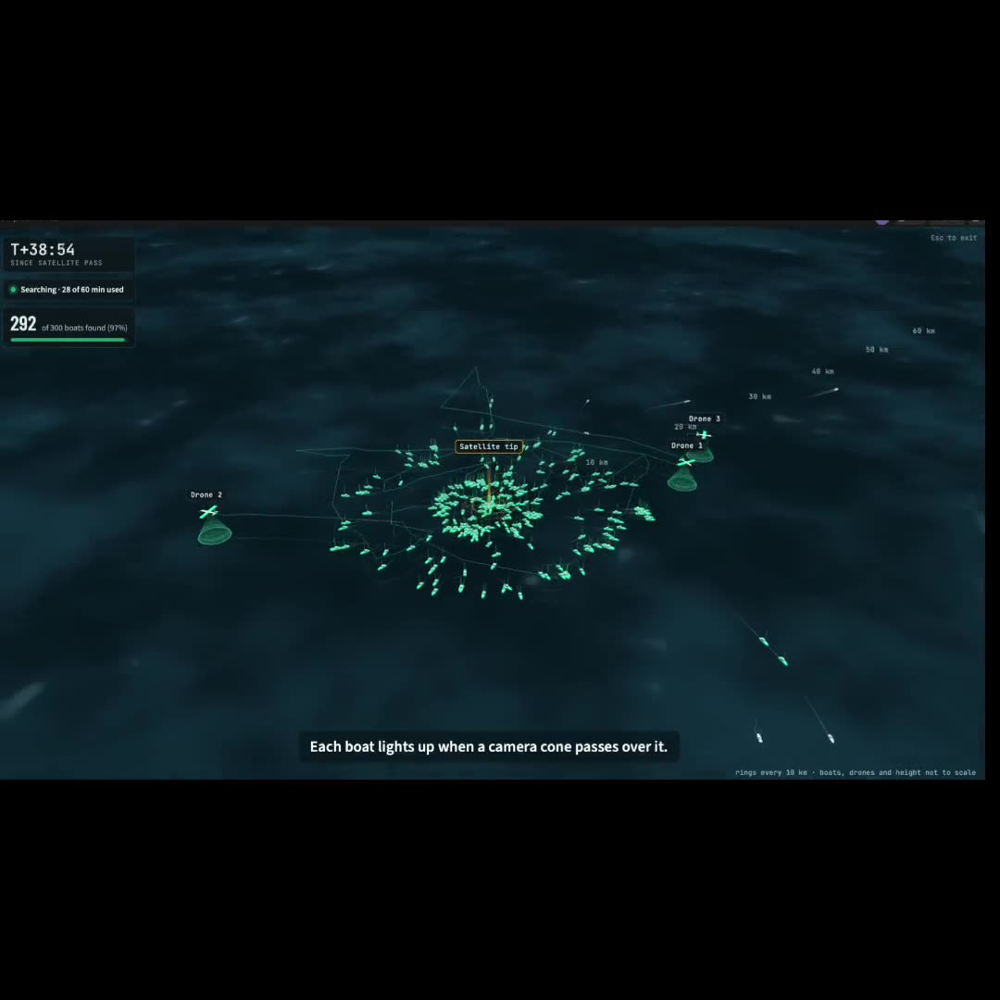
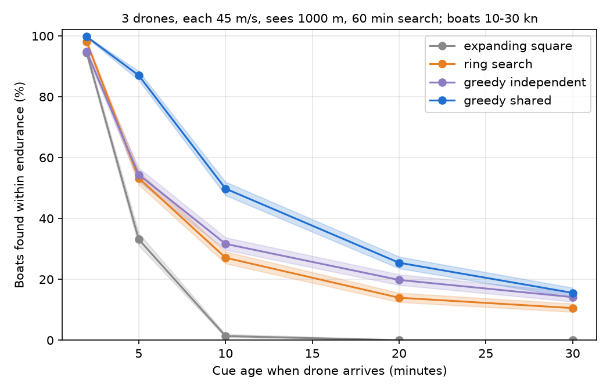
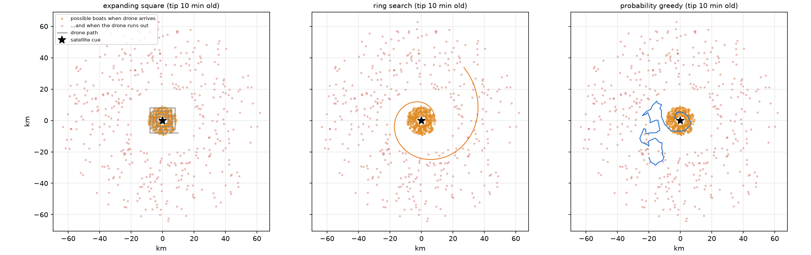

Maritime cue-and-search drone planning
A completed research project: can a drone find a boat that has moved since its satellite tip?
Completed and discontinued as a product. Simulation only; nothing was flown at sea.

3 drones / shared mapThe idea
A satellite spots a boat, but by the time a drone arrives the boat has moved. I built a simulation to test how old a tip can get before a drone team can no longer find it, and whether a probability-based search plan beats standard patterns. The investigation showed the answer depends on assumptions I could not validate, so I stopped pursuing a product and kept the work as a research record.
What this does not prove
- Everything on this page is a result from my simulation, under the assumptions listed below. None of it is a measured real-world performance.
- The review that led me to stop was an AI-assisted, multi-perspective review with web research. It was not a panel of human experts, and its claims about satellite latency and hardware limits are not independently verified.
- The simulation had flaws I confirmed in the code: the planner's guesses came from the same boat model that made the test boats, and the real-track prior did not exclude vessels that also appeared in the test day.
The problem
Standard Coast Guard search patterns were designed for slow, drifting targets. A boat moving at 10 to 30 knots leaves the old tip behind quickly, so the area to search grows with the square of how old the tip is.
The repository is named Traffic-drone because it began as a human-trafficking idea. There is no road-traffic or triangulation component. I checked the original premise (traffickers hide under cloud) early and found it was wrong, because radar satellites see through cloud, so I changed the question to what happens after a tip.
What the experiments showed
Percent of simulated boats found within the drone's endurance, 2,000 boats per setting for the straight-line runs. These describe the model, not the real world.
| Setting | Result |
|---|---|
| 1 drone, 10 min tip: standard square / ring / smart | 0.4% / 14.8% / 21.9% |
| 3 drones, 10 min tip: smart separate / smart shared map | 31.6% / 49.8% |
| 1 drone with a 2 min tip vs 3 drones with a 10 min tip | 81.8% vs 49.8% |
| Camera range 1 km vs 500 m (3 drones, shared map) | 51.8% to 28.1% |
| Real fishing paths, 3 drones, 10 min tip: spiral / smart / smart learned from other days | 80.1% / 88.1% / 92.2% |
| Experiment 26: 10,220 real AIS gaps of 12 to 24 h: circle / learned / straight-line | 25.4% / 24.5% / 0.0% |
Experiment 26: the circle matched the planner
I tested where boats that switched off their tracker actually reappear, using Global Fishing Watch data. With no heading information, a plain circle around the last known position caught 25.4% of boats. My learned motion model caught 24.5%. My original straight-line guess caught 0.0%, because these boats mostly loiter instead of running.
The lesson is specific: the smart search only helps when the tip carries direction or speed. Without that, there is nothing to exploit. This test covers large fishing vessels and 12 to 24 hour tips, so it says nothing about small boats or fresh tips.
Assumptions that proved unrealistic
- A perfect 360 degree camera out to 1 km. Halving the range cut the shared-map result from 51.8% to 28.1%.
- Tips only 2 to 10 minutes old with 100 m error. Vendor-reported satellite detection latencies are reported in hours, which I did not verify, and my own simulation finds under 6% for one drone at 30+ minutes.
- No transit, launch, comms, weather or airspace, and open-loop flight paths.
- Straight-line boats and legal AIS boats, instead of boats evading a patrol.
- A planner that is not new: a particle cloud with searched water crossed off is the architecture of established search-planning systems.
Why I stopped
The headline numbers rested on the assumptions above. My strongest finding, that tip age dominates, points at data latency and logistics rather than at a better planner. I had no evidence that any operator needed this or would pay for it. Continuing would have meant polishing a demo on top of unvalidated inputs, so I closed the product direction and kept the work.
What I learned
- A simulation shows what follows from its assumptions, so validate the biggest assumption first. I validated it last.
- A win over a weak baseline is not a strong result. A plain circle was the baseline that mattered.
- Write the prediction down before the experiment. It kept me from rationalizing results afterwards.
- Negative results are results, and knowing when the evidence says stop is part of engineering.
What I built
- A Python simulation (about 2,200 lines, numpy and matplotlib) of boats, drones and cameras, with a mechanics test suite.
- Four search planners (expanding square, ring search, a particle-cloud probability search, and a shared-map version for drone teams), plus Brown's FAB as a comparison.
- Replays of real fishing and pleasure-craft tracks from public NOAA AIS data, and a test on 10,220 real AIS-gap events from Global Fishing Watch.
- Confidence intervals on the results and a written prediction for each experiment, committed before I ran it.
- A 2D and 3D browser replay of the simulated runs.
Evidence & demos


The hardest problem
The planner's edge disappeared when I tested it honestly
On real paths the smart search beat a plain spiral by only a few points, and in Experiment 26 a circle matched it. Fixing that would have needed real tip data, a realistic camera model and vessel-disjoint testing that I did not have, so I documented the gap instead of covering it up.